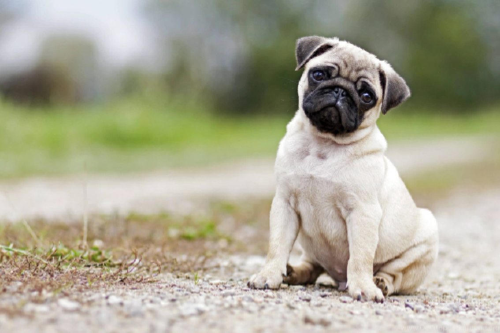
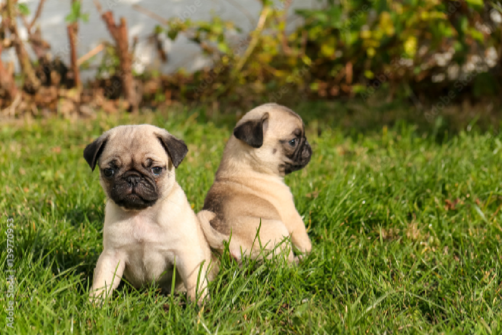
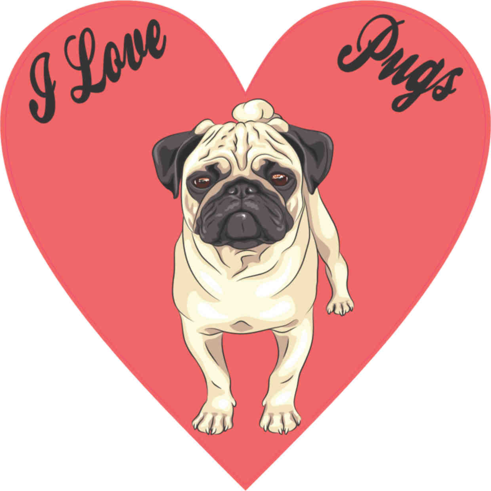

О ПИТОМНИКЕ

Мы являемся счастливыми владельцами одних из самых замечательных собак на свете - мопсов, и любовь к ним сделала нашу работу успешной. Наша работа не остается без внимания кинологов, специализирующихся исключительно на мопсах, и также
привлекает внимание любителей этой породы. А не любить эту породу – невозможно.
Маленькая собачка с оригинальной внешностью, ласковым характером, огромным чувством собственного достоинства, с живым темпераментом. Прекрасно чувствует себя в городской квартире, уживается со всеми четвероногими и двуногими обитателями.
Ничего и никого не боится. Очень любвеобильна и контактна, преданная. Порода, о которой можно говорить часами, сутками…
Мы занимаемся выставочной карьерой и разведением породы с 2005 года. Сам питомник зарегистрирован во FCI с сентября 2007 года.
Первой нашей собачкой и родоначальницей стала Зоренька Ясная (д.р. 26.04.2005) от Тагритании Прекрасного Принца и Глашеньки Элди. Зоренька является не только великолепной шоу-собакой, о чем говорят ее многочисленные победы на выставках, но и прекрасная производительницей. Именно для нее был и приобретен наш первый кобель Фаворит Снаппи. Гармонично сложенный, с короткой густой, мягкой шерстью. В это же время мы взяли еще одного кобеля черного окраса – Тимоти Далтона. Это мопсы, рожденные в Белоруссии, но за ними стоят предки московского питомника "Тагритания" (вл. Таманова). Это в первую очередь Абигайн Тагритания, которая сыграла в начале 90-ых годов большую роль в развитии питомника "Тагритания" и в то время была, пожалуй, самой именитой сукой. Также Tagritania Sherman Roppy, Labbell Tagritania, Tagritania Medea, Kay Tagritania, Tagritania Schon Persival, Tagritania Prekrasny Prints. Все они чемпионы разных стран. Еще один предок Zeton z Brozozovego Siedliska (Жетон, вл. Белоус) – уникальный суперпрепотентный производитель, ставший легендой и гордостью России, а так же известный во многих странах.
Первой нашей собачкой и родоначальницей стала Зоренька Ясная (д.р. 26.04.2005) от Тагритании Прекрасного Принца и Глашеньки Элди. Зоренька является не только великолепной шоу-собакой, о чем говорят ее многочисленные победы на выставках, но и прекрасная производительницей. Именно для нее был и приобретен наш первый кобель Фаворит Снаппи. Гармонично сложенный, с короткой густой, мягкой шерстью. В это же время мы взяли еще одного кобеля черного окраса – Тимоти Далтона. Это мопсы, рожденные в Белоруссии, но за ними стоят предки московского питомника "Тагритания" (вл. Таманова). Это в первую очередь Абигайн Тагритания, которая сыграла в начале 90-ых годов большую роль в развитии питомника "Тагритания" и в то время была, пожалуй, самой именитой сукой. Также Tagritania Sherman Roppy, Labbell Tagritania, Tagritania Medea, Kay Tagritania, Tagritania Schon Persival, Tagritania Prekrasny Prints. Все они чемпионы разных стран. Еще один предок Zeton z Brozozovego Siedliska (Жетон, вл. Белоус) – уникальный суперпрепотентный производитель, ставший легендой и гордостью России, а так же известный во многих странах.
Через год от Зореньки Ясной и Фаворита Снаппи был получен первый помет. В питомнике осталась дочь – Беграна Заря’Эос, которая уже в семнадцать месяцев стала чемпионкой многих стран. Она хорошо сложена, квадратного формата, чистого окраса, с идеально короткой шерстью, ярко выраженной маской, хорошим пигментом.

Далее от этой же пары, со второго помета, в питомнике осталась еще одна дочь – красавица Астерия Звездочка Царство Зари-Эос. Еще в юном возрасте стала юной чемпионкой нескольких стран и прочно заняла свое место на выставочных рингах и так же
порадовала своими данными.
Дети с этих пометов тоже принимают участие в выставках и занимают далеко не последние места.
Кобели нашего питомника активно участвуют в племенной работе других заводчиков и питомников. И эта работа так же приносит отличные результаты, эти дети были рождены в интересном сочетании кровей. Они молоды, но очень перспективны. Подтверждением служат их победы на выставках.
Основной задачей питомника является разведение и популяризация очаровательных собачек породы мопс. В своем разведении мы отдаем предпочтение некрупным, компактным, костистым, гармонично сложенным собакам чистого окраса, с красивой правильной головой, свободными движениями, крепкой линией верха.
Мы всегда стараемся поддерживать отношения с владельцами наших щенков. Очень рады, когда они приходят на выставки. Всегда помогаем подготовить к выставочной карьере, делимся информацией по выращиванию.Рады новым знакомствам и сотрудничеству с поклонниками этой замечательной породы.

Дети с этих пометов тоже принимают участие в выставках и занимают далеко не последние места.
Кобели нашего питомника активно участвуют в племенной работе других заводчиков и питомников. И эта работа так же приносит отличные результаты, эти дети были рождены в интересном сочетании кровей. Они молоды, но очень перспективны. Подтверждением служат их победы на выставках.
Основной задачей питомника является разведение и популяризация очаровательных собачек породы мопс. В своем разведении мы отдаем предпочтение некрупным, компактным, костистым, гармонично сложенным собакам чистого окраса, с красивой правильной головой, свободными движениями, крепкой линией верха.
Мы всегда стараемся поддерживать отношения с владельцами наших щенков. Очень рады, когда они приходят на выставки. Всегда помогаем подготовить к выставочной карьере, делимся информацией по выращиванию.Рады новым знакомствам и сотрудничеству с поклонниками этой замечательной породы.